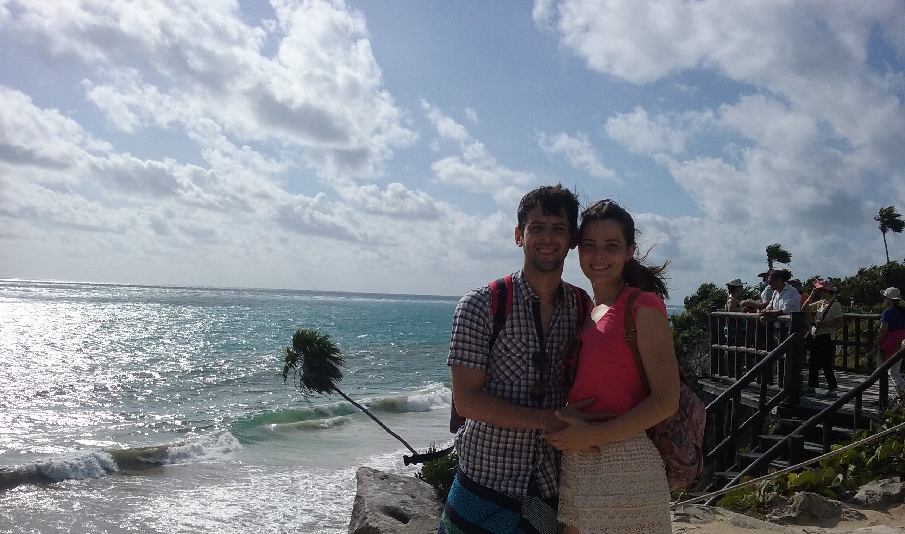
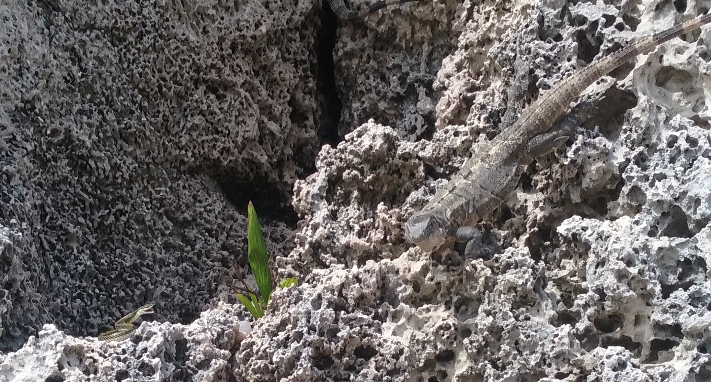
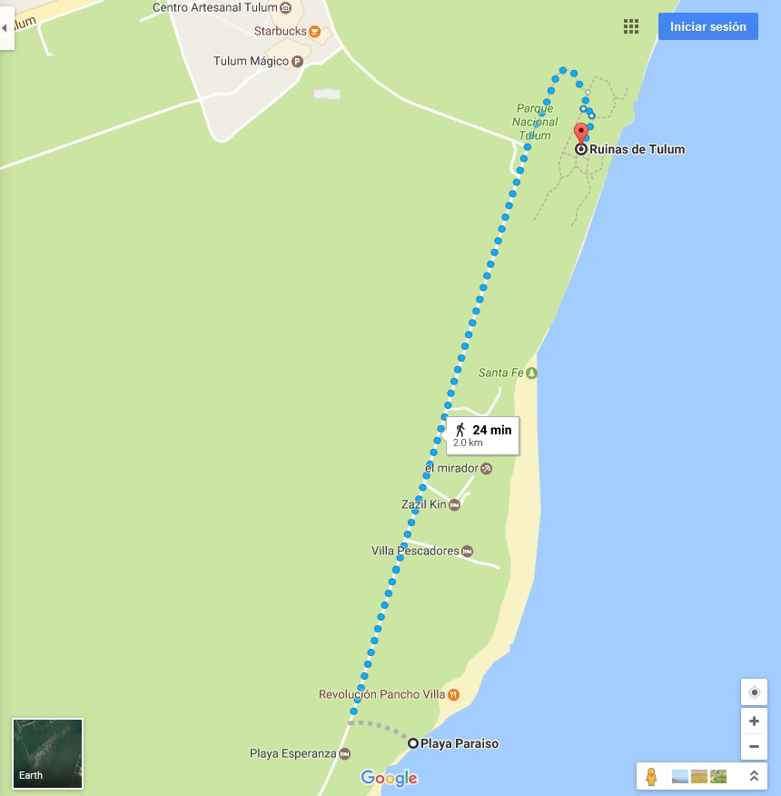

Por Gonzalo Volpe Gómez
Nuestro segundo día en Quintana Roo decidimos tomarnos una van que salió desde el centro de Playa del Carmen y nos dejó en 50 minutos en el ingreso a la zona arqueológica de Tulum. El sistema de vans, es sencillo, uno se sube e indica el destino al chófer, y paga al bajarse. A fines de 2015 costaba entre 40 y 50 pesos argentinos el tramo por persona.
Ruinas de Tulum, México.
Al llegar a la zona arqueológica nos bombardearon con ofertas para que hagamos una visita guiada a las ruinas o para que nos lleven a conocer algunas playas de Tulum. Mi recomendación, como la mayoría de las veces: ¡Háganlo por su cuenta!
Desde donde nos deja la van hasta la entrada a las ruinas tenemos unas cuadras que se pueden hacer tranquilamente caminando. Allí podrán divisar una ventanilla donde venden los tickets de ingreso a la zona arqueológica. Actualmente el precio sigue igual que cuando fuimos con Mechi, por 85 pesos mexicanos podemos ingresar a un lugar increíble, lleno de cultura Maya, historia y construcciones imponentes. Los horarios de visita son de 8:00hs a 17:00hs, pudiendo entrar hasta las 16:00hs. Les recomiendo que antes de viajar visiten INAH, una web del gobierno donde mantienen actualizadas las tarifas y los horarios.
Playa de las ruinas de Tulum
Playa de las ruinas de Tulum
Es un imperdible de Tulum y se puede acceder en barco o desde las ruinas. ¿Recuerdan que les dije que apenas nos bajamos de la van nos bombardearon con ofertas? Bueno, una de las ofertas era llevarnos a esta playa argumentando que solo se podía llegar en barca. ¡Mentira! Desde las ruinas, después de haber pagado el valor de la entrada, podemos llegar por una escalinata de madera a la playa.
Ese día, luego de bajar la escalera (con foto de por medio, es un lugar increíble para fotografiar), nos dimos cuenta que no íbamos a estar solos, sino que alrededor nuestro había una gran cantidad de iguanas. Con lo que me encantan los animales, estaba fascinado. Mi nivel de felicidad tocó su punto extremo cuando, entre foto y foto, divise una iguana que miraba fijamente a un punto sobre una roca. Al acercarme, vi a una serpiente bebe observando a la iguana de frente y abriendo la boca como advirtiendo que no se le acerque. Un sentimiento indescriptible me invadió, la naturaleza me estaba regalando plenitud en una simple imagen.
La playa en sí, es muy linda, al estar al lado de las ruinas le da un toque único que la diferencia de cualquier otra costa del mundo. Sin embargo, cuando fuimos no había casi playa, el mar había comido gran parte de la arena y solo quedaba una pequeña franja no apta para pasar todo un día allí. Además, el mar generaba muchas olas lo que producía que este revuelto y dificultaba a los turistas que se querían bañar.
Serpiente bebe enfrentando a iguana. Playa de las ruinas de Tulum, México.
Playa Paraíso, Tulum, México.
Playa Paraíso es uno de los lugares más hermoso que tuve la suerte de conocer. Llegar desde las ruinas es muy simple lo que permite que se pueda combinar con la visita a la zona arqueológica. La caminata que une los dos puntos es de aproximadamente 25 minutos y para nada exigente. Junto con Mechi, decidimos dirigirnos hasta Villa Pescadores primero y de ahí ir bordeando la costa. Villa Pescadores es una playa hermosa, donde el color turquesa del agua es impactante y hace de antesala a la gran Playa Paraíso.
Camino desde las Ruinas de Tulum a Playa Paraiso.
Al llegar, nos dimos cuenta que el nombre de la playa hace honor a lo que es el lugar en realidad, un PARAÍSO. Arena totalmente fina, palmeras caribeñas y un color del mar tan vivo que nos hacia plantearnos si estábamos en un sueño. Es una costa verdaderamente linda con agua cálida y algunas olas que hacen divertido el baño. Allí almorzamos y tomamos unas cervezas bien frescas para después relajarnos en unas reposeras y simplemente contemplar el paisaje. Es una playa tranquila, donde no abundan las actividades, pero sumamente hermosa.
Cenote Dos Ojos, Tulum, México.
Los cenotes, como su nombre lo indica, son cavernas inundadas de agua. Para la cultura Maya significaban un punto de conexión con los dioses y un lugar donde se hacían sacrificios. Los puede haber abiertos, semi-abiertos o subterráneos. Definitivamente son un imperdible de todos aquellos que viajan a la Riviera Maya.
En la tarde, después de conocer las ruinas y Playa Paraíso decidimos hacer un tour por dos cenotes, uno abierto y uno subterráneo (Cenote Dos Ojos). A diferencia del mar, el agua es bastante fría pero sumamente transparente y profunda lo cual nos permite ver todo. Antes de realizar el viaje había leído muchísimo sobre este tipo de cavernas, al punto que me había fascinado totalmente. Sinceramente, no me defraudaron, son lugares naturales, totalmente distintos, donde nadar es muy placentero. En el cenote abierto, hicimos nuestro primer salto de fe, el cual nos hizo sentir como la adrenalina corría por nuestro cuerpo.
Otra duda que teníamos antes de adentrarnos en los cenotes es si generaban claustrofobia. Nosotros no nos sentimos en ningún momento mal, pero puede ser que si alguno de ustedes ha pasado por algún síntoma de encierro, las cuevas subterráneas no sean la mejor opción. De todas maneras, pueden visitar los cenotes abiertos o los semi-abiertos.